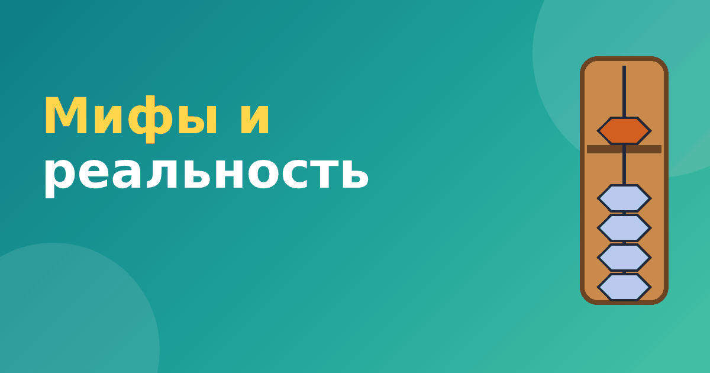

Ментальная арифметика: мифы и реальность

О ментальной арифметике ходит много слухов: одни родители называют её чудом, другие считают маркетинговой выдумкой. Истина, как обычно, находится посередине. Мы собрали пять самых частых мифов о ментальной арифметике и разобрали каждый спокойно, без восторгов и без критики ради критики.
Миф 1. «Ребёнок считает быстрее калькулятора»
Правда в том, что опытные ученики действительно очень быстро складывают и вычитают небольшие числа. На показательных выступлениях видно, как дети за секунды решают десятки примеров. Но это специально натренированные задачи определённого типа. Калькулятор справляется с любыми числами, дробями и функциями, и сравнивать с ним человека некорректно. Поэтому слова «быстрее калькулятора» — красивая реклама, а не реальность.
Миф 2. «За месяц ребёнок станет гением счёта»
Месяц занятий даёт знакомство с абакусом и первые простые действия. Для уверенного мысленного счёта обычно нужны месяцы регулярной практики. Любые обещания быстрого результата стоит воспринимать с осторожностью. Реалистичный план мы описали в статье с чего начать ментальную арифметику дома.
Миф 3. «Задействуются оба полушария, и интеллект растёт»
Одновременная работа рук и воображения звучит убедительно, но научные данные скромнее. Оба полушария мозга работают при любой сложной деятельности. Доказательств того, что абакус даёт особый эффект для общего интеллекта, пока нет. Подробнее мы писали в статье что развивает ментальная арифметика.
Миф 4. «Это улучшит оценки по всем предметам»
Навык счёта полезен для математики, но школьные оценки зависят от внимания, мотивации, учителя и множества других причин. Занятия могут помочь ребёнку увереннее чувствовать себя с числами, и это косвенно улучшает успеваемость по математике. Но ожидать роста по всем предметам не стоит.
Миф 5. «Заниматься нужно обязательно, иначе отстанет»
Это самый вредный миф. Ментальная арифметика не входит в школьную программу, и ребёнок без неё прекрасно учится. Родители, которые чувствуют давление «все занимаются», рискуют потерять время и деньги на то, что ребёнку не нужно. Если ему интересно, отлично. Если нет, у него есть много других способов развиваться.
А что тогда правда
Если убрать преувеличения, остаётся вполне разумное содержание.
- Абакус — наглядный и понятный способ изучить сложение и вычитание.
- Регулярные занятия учат аккуратности и концентрации на задаче.
- Мысленный счёт можно освоить и получать от него удовольствие, особенно детям с визуальным мышлением.
- Результат зависит от регулярности и интереса, а не от волшебной методики.
Про вред и отзывы
Прямого вреда у ментальной арифметики нет, если занятия не превращаются в принуждение. Риски другие: потраченное время и деньги, лишняя нагрузка, разочарование от несбывшихся обещаний. Что касается отзывов, они разные. Довольны чаще те семьи, которые понимали, чего ждать, и занимались регулярно. Разочарованы те, кто ждал чуда. Читая отзывы, обращайте внимание на конкретику: какие навыки появились, сколько времени шли занятия.
Что ответить, если знакомые спорят
Про мифы о ментальной арифметике полезно знать, когда в семье или в чате родителей начинается спор. Одни говорят «это чудо», другие «это обман». Можно ответить спокойно: это метод тренировки счёта, у него есть сильные стороны и ограничения. Если ребёнку интересно и родители понимают, чего ждать, он получает пользу. Если занятия навязаны или ожидания завышены, возможно разочарование.
Хорошая привычка — просить конкретику. Когда вам говорят «у нашей дочки память улучшилась», уточните, как это проверяли. Когда рекламируют курс, спросите, какие навыки появятся к концу первого уровня. Так разговор уходит от лозунгов к фактам, а решение вы принимаете сами.
Частые вопросы
Есть ли научные исследования по ментальной арифметике?
Да, но их немного, они небольшие и дают разные результаты. Поэтому делать громкие выводы о влиянии на интеллект преждевременно.
Можно ли просто попробовать и не бояться ошибиться с выбором?
Да. Пробное занятие или бесплатный модуль тренажёра ничем не рискуют, а дают понимание, нравится ли ребёнку абакус.
Как проверить самому
Самый честный способ — попробовать. Бесплатный модуль тренажёра «Ментальная арифметика» показывает, как ребёнок воспринимает абакус, и ничего не обещает. Если понравится, можно двигаться дальше, а если нет, потеряно всего несколько минут. Если вы выбираете курс, пригодится статья как выбрать курс ментальной арифметики.